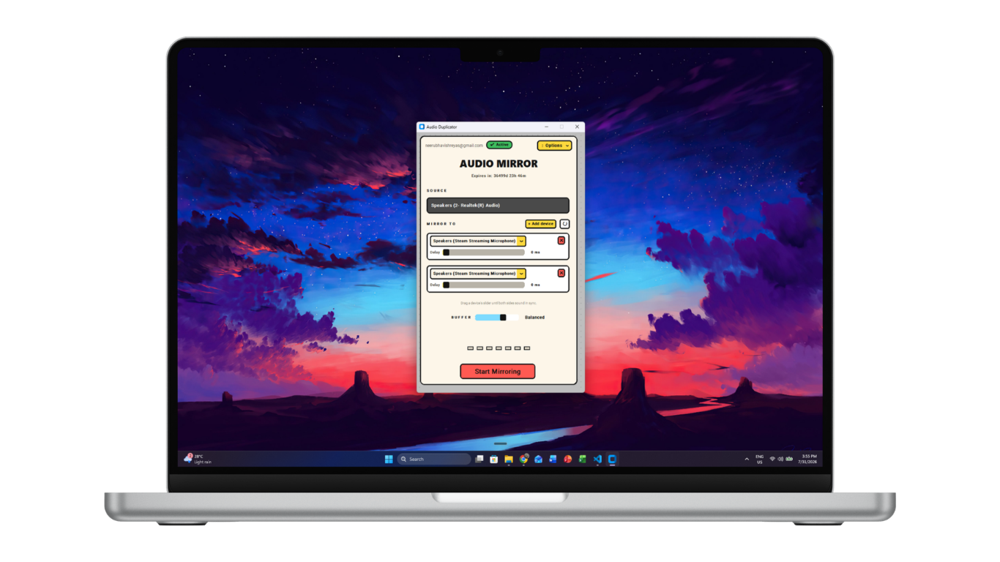
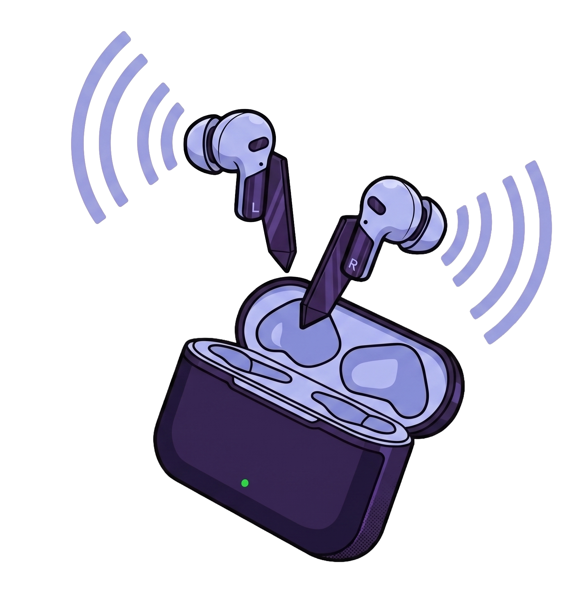
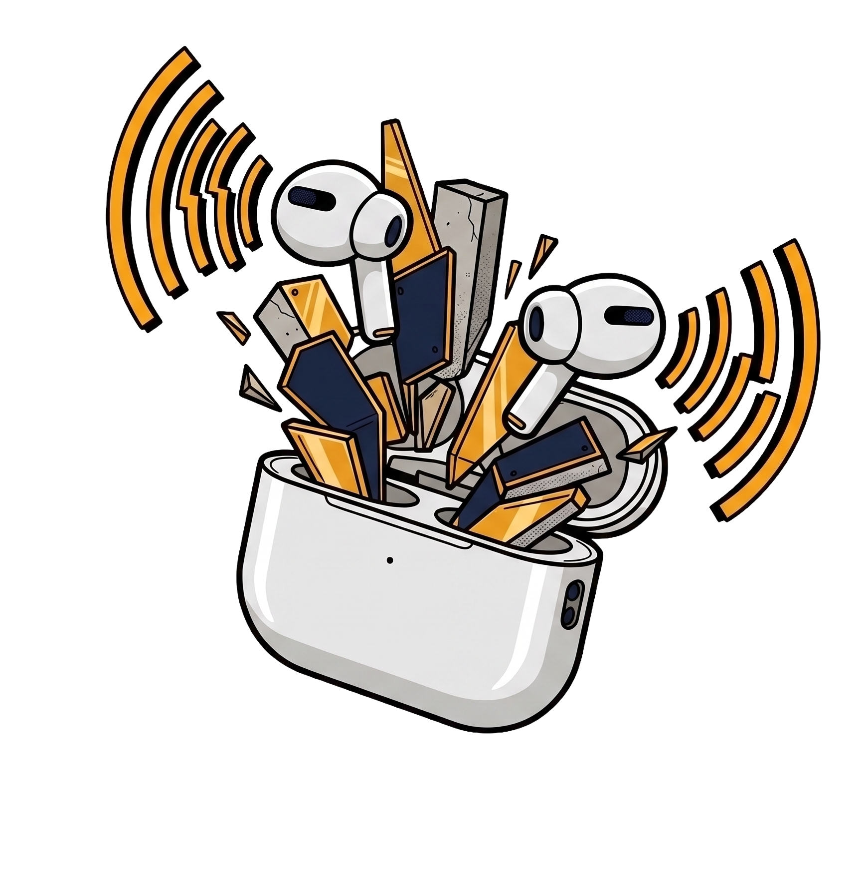

4
Up to four outputs
Mirror to four devices at once. Add and remove them while audio is playing.
Windows 10 & 11
Windows sends audio to a single output device. Audio Mirror sends it to four — your laptop speakers and up to three Bluetooth headphones or earbuds, at the same time, from the same movie.
$2.50 per month · No account needed to try the download

You pick a pair of earbuds in the Windows sound menu and that is that. The other person leans in, or you split a cable, or somebody watches the film on mute.
Audio Mirror taps whatever Windows is already playing and copies that stream to every output you add — no cables, no re-pairing, nothing to configure in Windows.
Then the film starts and nobody touches it again.
Audio Mirror reads whatever your PC is currently playing through its default output. Nothing to select — the source strip at the top of the window shows what it picked up.

Pick up to four devices from the dropdowns — Bluetooth earbuds, USB headsets, your laptop speakers, any mix. Each one gets its own row and its own status.

Bluetooth devices don't all arrive at the same moment. Each row has a delay slider up to 80 ms — nudge the early one until both sides sound like one. It adjusts live, while the audio plays.
Every claim here is something the app actually does.
Mirror to four devices at once. Add and remove them while audio is playing.
An independent slider per output, adjustable live, so slow Bluetooth can be lined up with fast speakers.
Ultra Low, Low, Balanced and Stable. Trade a little latency for stability when a device stutters.
When an earbud wanders out of range and comes back, that output picks up again on its own. The rest never stop.
Every row says what it's doing — connecting, synced, reconnecting, or unsupported. No guessing which earbud dropped.
Change your system volume and the mirrored devices track it, so one volume key controls the room.
The whole app. One window, no settings screen buried three menus deep.
One plan. Pay for the month you need it.
Full access for 30 days. Pay again only if you want more time.
38.8 MB · Windows 10 & 11, 64-bit · Checkout by PayPal inside the app
Close enough that you stop noticing, once you've set the sliders. Bluetooth devices each add their own delay, and no software can remove delay that has already happened — so Audio Mirror lets you delay the faster device to match the slower one. That's what the per-row slider does, up to 80 ms.
It works with whatever Windows lists as an output device — Bluetooth, USB, or built-in. Some devices refuse the format the app asks for; those are marked "Unsupported" in their row rather than failing silently.
It's a small app doing a steady, low-level job: reading one audio stream and writing it to a few others. It runs its audio threads at raised priority so playback stays smooth, which is standard for audio software.
That row switches to "Reconnecting" and keeps trying, and you get a notification. The other outputs carry on uninterrupted. When the device comes back it rejoins on its own.
A month costs $2.50 and then stops. It is not a recurring subscription — nothing auto-renews and there is nothing to remember to cancel. When the month runs out, access simply expires, and you pay again only if you still want it.
Not directly. Windows sends audio to one output device at a time, and the Stereo Mix workaround only exists on some sound cards, routes a single extra device, and gives you no way to correct the delay between them. Audio Mirror handles up to four outputs and gives each one its own delay slider.
That is the case this was built for. Pair both sets of Bluetooth earbuds to the laptop, add them as two outputs, and line them up with the delay sliders — one film, two people, nobody sharing a cable or leaning in.
Not yet. Audio Mirror uses Windows' own audio loopback to tap the system output, so it's Windows-only for now.